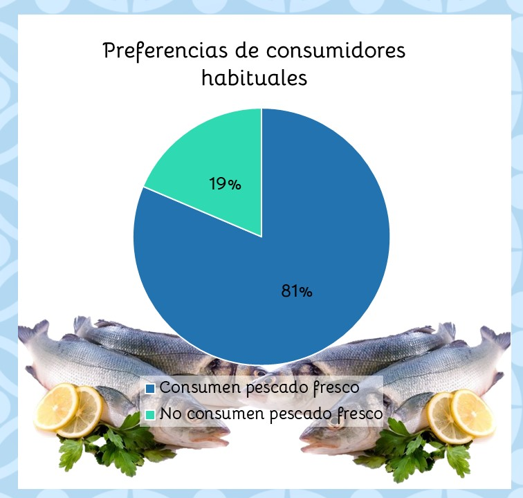

Clubes de ciencia México 2021
🐟Club 19: Valor del consumo de alimentos de origen marino y nacional🐟
🎣 Proyecto: Consumo de productos pesqueros
Equipo: Ostión

Equipo: Ostión
El problema que se abordara es el consumo de los productos pesqueros en mexicanos con un rango de edad
que va de 15 a 40 años de edad. La forma en que éste se relaciona con la ODS 12 (producción y consumo reponsable)
es que las personas aprendan a consumir de forma responsable con su salud y con el ambiente.
En la población mexicana de 20 años o más, 42% de los hombres y 37% de las mujeres tienen sobrepeso (datos del INEGI del 2018),
lo más alarmante de esto es que la tendencia va en aumento, lo cual es una evidencia de que no sabemos comer bien.
Otro punto importante de la ODS 12 es la producción responsable y, aunque los consumidores no tenemos un papel directo en esta área sí podemos elegir qué consumimos. Es por eso que el proyecto también va enfocado a averiguar si las personas saben qué consumen y, al mismo tiempo, dar alternativas sustentables para el consumo de productos pesqueros.
En este club 19 aprendimos sobre los beneficios del consumo de pescado, moluscos y crustáceos y la necesidad de llevar una dieta balanceada; queremos que este conocimiento no se quede aquí sino que se pueda compartir para generar una cultura de comer bien. Este tema realmente es importante, puesto que muchos personas descuidan su alimentanción (y muchas veces la de su familia también) y no varían sus alimentos. Con la implementación de este proyecto no sólo queremos crear conciencia sobre la problemática en nuestro país sino que también queremos ayudar a mejorar la calidad de vida de los mexicanos.
Figura 1. Metodología del proyecto resumida.
1.- ¿Con qué frecuencia consume pescado?
2.- En dado caso de que su consumo no sea tan frecuente, ¿cuáles son las razones por las que no lo hace?
3.- ¿En qué presentación come el pescado?
4.- ¿Conoce los beneficios de consumir pescado?
Se hizo un análisis de datos con ayuda de 🐼 Pandas, los parámetros requeridos fueron:
- Rango de edad de la encuesta, para ubicar a nuestros encuestados.
- Promedio de frecuencia del consumo, con base a un mes.
- Número de consumidores habituales (quienes lo consumen al menos 1 vez al mes).
- Las personas que conocen los beneficios del consumo de pescado.
- Número de consumidores que conocen los beneficios de su consumo.
- Número de consumidores habituales que consumen pescado fresco.
- Personas que saben de dónde provienen los alimentos pesqueros que consumen (se hizo una división entre personas "normales" y los consumidores habituales).
Se obtuvieron resultados de una encuesta aplicada a un sector de edad que va de los 20 a los 43 años.
En esta primera gráfica se observan las edades de los encuestados.
El promedio de edad es de 21 años.

Gráfica 1. Distribución de edades.
El promedio de consumo es de 2 veces por mes, es decir, 1 vez cada 15 días.
Lo cual no está tan mal según lo que aprendimos en el club, aunque sí se debe de fomentar, ya que lo ideal es comer 1 vez por semana.
De igual interés son las razones por las cuales no se consume, dichos datos se leyeron en forma personal y se analizaron en una discusión grupal.
La mayoría de las respuestas están enfocadas al gusto, que dejan mal olor o que prefieren comer otro tipo de carne que no sea pescado.
Esta última respuesta es la que más nos llamó la atención, debido a que aunque la carne roja (la más mencionada en la encuesta) tiene de hecho un buen sabor, no aporta todos los nutrientes que el pescado.
El número de personas que sí conoce los beneficios de comer pescado es de 79,
mientras que 34 no conocen los beneficios de consumir productos pesqueros.
Si se traduce a porcentajes:
70% de las personas encuestadas reportan consumir pescado.

Gráfica 2. Personas que conocen los beneficios vs las que no.
Los consumidores habituales encontrados en una densidad de 113 encuestados es de 86 personas.
En porcentaje esto es un 76.1%.
Dentro de los consumidores habituales se nos hizo de interés conocer cuántos
- conocen los beneficios
- consumen pescado fresco
Tomando el total de 86, vemos que
- El 73.3% de los consumidores habituales conocen los beneficios (63 personas).
- El 81.4% consumidores habituales consumen pescado fresco (70 personas).

Gráfica 3. Preferencias de consumidores habituales.
Comparte tus observaciones, lo aprendedido, limitaciones y siguientes pasos.
En el siguiente video se explicara la importacia de saber todo esto